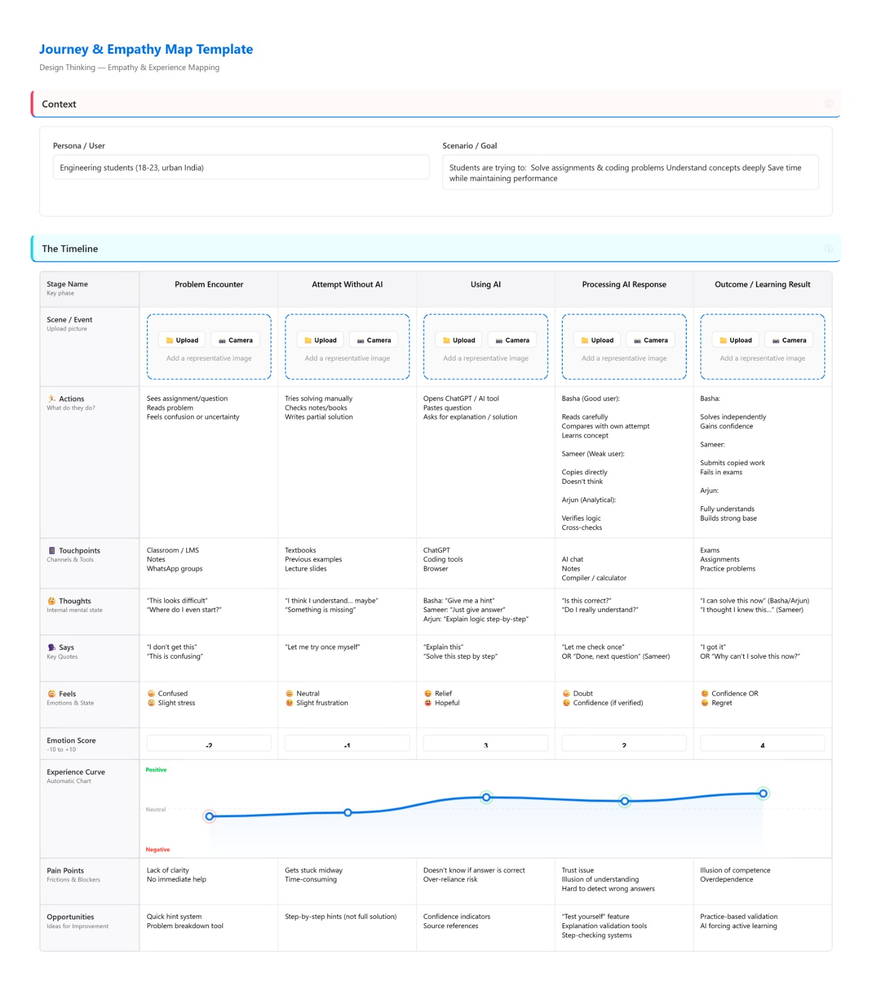
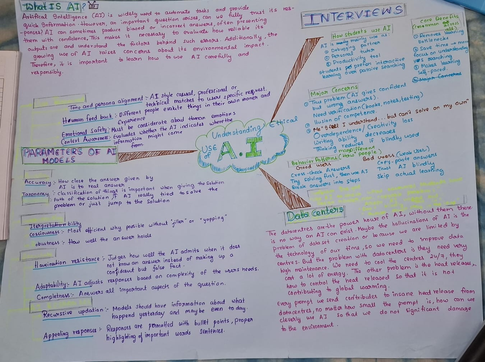

Our brainstorming involved 6 participants generating 3 ideas every 5 minutes. This intensive process led to the discovery of the "Interception Proxy" concept as a primary solution for AI ethics.

Analysis: Identifies the core "Trust Gap" and the risk of unverified data transmission as the primary ethical failures in current student-AI interactions.

Mapping: Visualizes the student's transition from initial confusion and dependency toward a state of "Verified Agency" using Spark Mind.

Protocol: Outlines the internal logic of the Interception Layer—from PII scrubbing to the final vector-check verification.
Checking if student work is too similar to AI datasets before transmission.
Alerts that suggest *how* to use AI ethically rather than doing the work for you.
Ensuring the AI receives only the necessary technical context, never the identity.